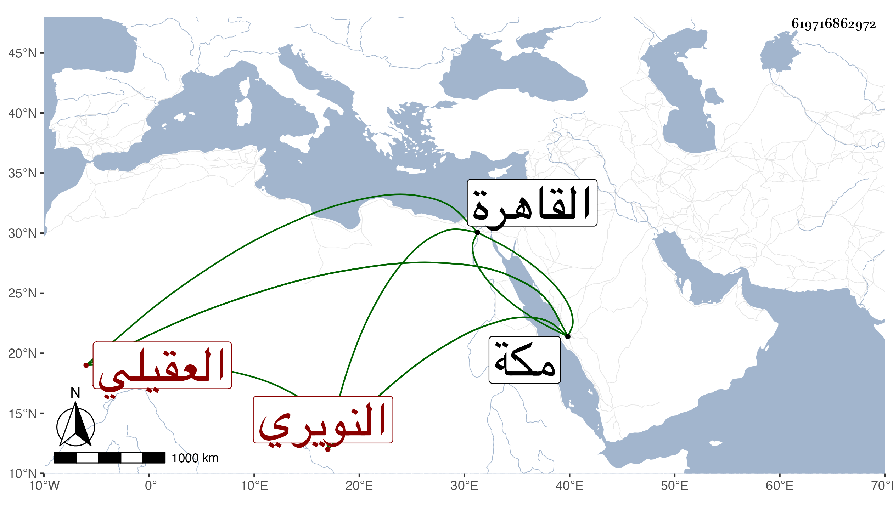

0902Sakhawi.DawLamic.ITO20230111-ara1.EIS1600.619716862972
Biography ID: 619716862972
466
محمد بن أبي بكر بن محمد بن محمد بن أحمد بن محمد الكمال أبو الفضيل ابن الخطيب فخر الدين بن الكمال أبي الفضل العقيلي النويري الآتي أبوه وأخوه يحيى وعبد الرحمن وهو من أمهات ثلاث . سمع مني المسلسل وغيره بمكة وتردد إليه وإلى أخويه الشمس البصري بن الزقزق أحد الفضلاء للتعليم والاشتغال ثم لم يلبث أن تزوج من عدا يحيى بابنتى ابن عم ابيهم المحب النويري وذلك كله في سنة تسع وتسعين بعد أن دخلا القاهرة وخطبا بجامع الغمري وغيره وراما الأذن في مباشرتهما الخطابة بمكة فقيل حتى يكبرا ويشتغلا بحيث كان ذلك مقتضيا لترددهما في الاشتغال عند الزيني الشافعي يسيرا حتى عادا في سنتهما مع الركب .
